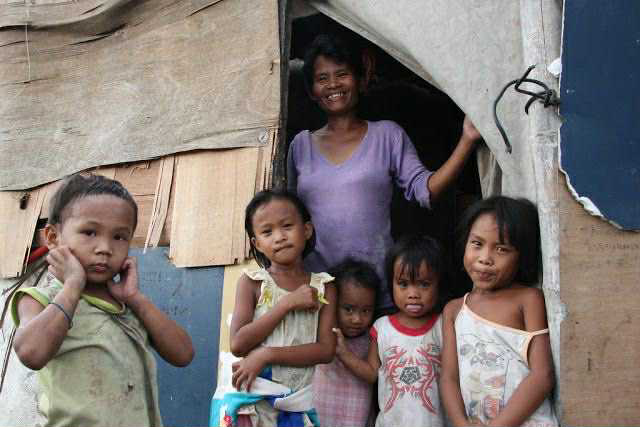
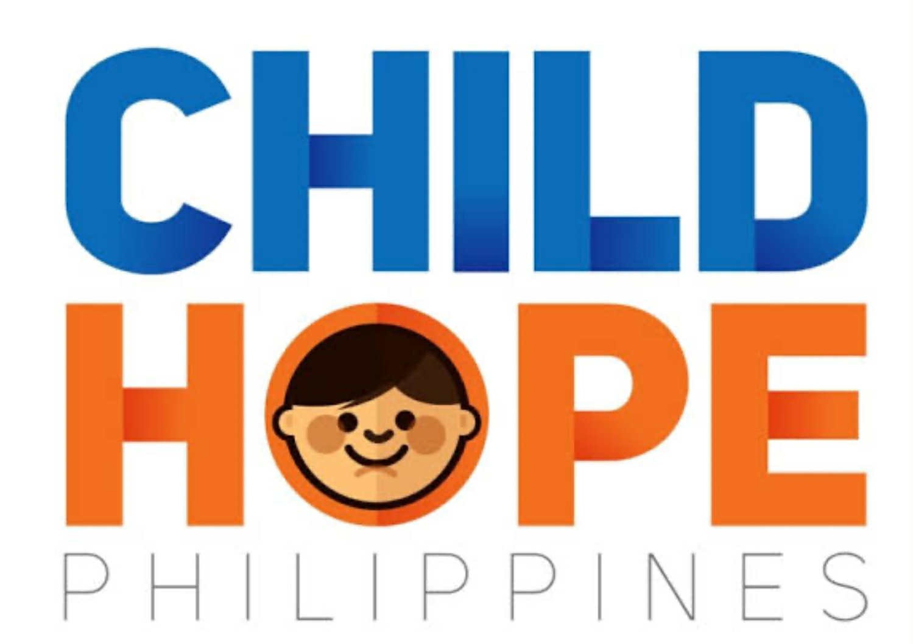
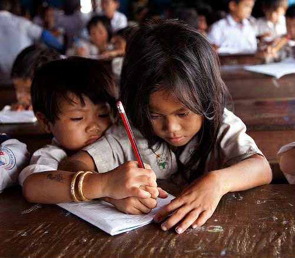
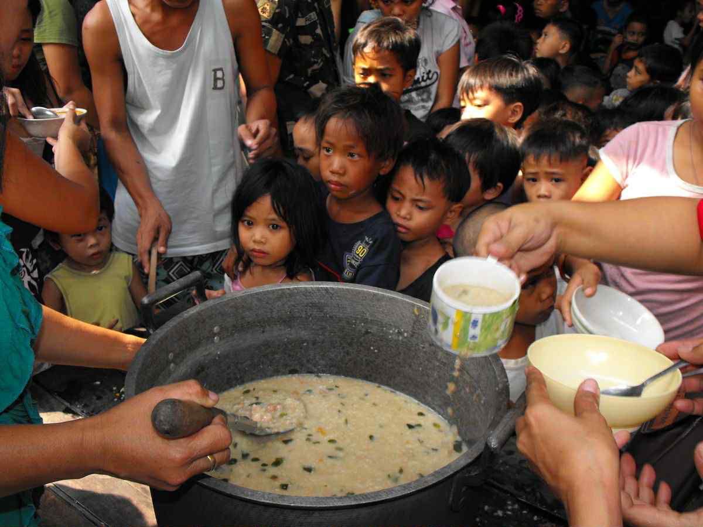

“Is it by chance that people were born to suffer more?”, a question that is often pondered by underprivileged people. The majority of the population who lives in poverty wonders why it's them that were given these circumstances. Millions of children are stripped off from basic human rights such as education, healthcare, shelter, and more. Because they lack the resources and financial means, some children are forced to work instead of being in a classroom.
Wouldn’t you also want for these children to be provided with basic human needs fit in a standard way of living? Children whose goal is to study and not to provide for their families.
With this, this website will serve as the voice of the children who are silenced. In this website, it will show how detrimental poverty is to one’s goals and future.
What Is It Like Being Them
According to a new Social Weather Stations’ (SWS) Survey, 15.5 million of Filipino Families considered themselves poor as of April 2025 with 70% of it coming from Mindanao. In a global perspective, 8.5% of the global population lives in extreme poverty while around 44% of the global population remain poor. On the other hand, in the Philippines, 12.4% of the children population which is approximately 5.14 million Filipino children live in extreme poverty, as they barely survive living off of 150 pesos per day. With around 1.09 million children aged 5 to 17 working in 2023, child labor continues to become a major concern as these children drop out of school to provide for their families.
These are not just numbers, they are the lives of people struggling to survive and provide for their basic needs. For countless of years, these statistics continue to be significant in number where little to no improvement are made for these families. Several factors are contributing to this major concern and we should think of ways to relive them from their circumstances.
Just because we are privilleged, does not mean these lives does not concern us. We are part of a society and we have to fulfill our roles as citizens of this community. As others have goals and dreams of becoming succesful, they have the goals and dreams to be able to eat a well-nourished meal three times a day. See the difference? As others are reaching to the top and have reached the top, let us not leave others behind.
Why Should We Care About Poverty?
These statistics are enough to show us that billions of people
struggle to provide basic necessities for their families such as
food, water, shelter, and more. Poverty is the root cause why people
are starved, children are forced to labor, and countries lack advancements
in the economy. Poverty is something that we should not take lightly and
could be dangerous to the lives of people if not addressed. You may have
heard the word “poverty” multiple times already but sometimes we do not
recognize the severity of it. These statistics are more than just numbers;
they are the lives of people who struggle to make ends meet.
What Is Currently Being Done?
There are various programs and intiatives that were made over the past years for poverty in the Philippines.
Below is a bulleted list of some of the efforts that were made to help alleviate poverty:
Efforts That Were Made:
The Food Stamp Program (Walang Gutom 2027), which gives food credits of ₱3,000 per month through an electronic card to food-poor households, aiming to increase household food security.
The School-Based Feeding Program (SBFP) offers milk and meals daily to undernourished public schoolchildren.
The Pantawid Pamilyang Pilipino Program (4Ps), a large conditional cash transfer program providing financial aid to poor families with children.
Efforts That Were Made:
Expanded PhilHealth packages for children, including new benefits for eye care and broader outpatient services.
Short-term crisis support through the Assistance to Individuals in Crisis Situations (AICS), offering medical aid and other emergency financial help to families in urgent need.
Collaborative efforts with international partners like the European Union and UNICEF help strengthen public finance for child social services.
Efforts That Were Made:
The government is also expanding early childhood education through the establishment of Child Development Centers in underserved communities, helping to combat learning poverty and promote early development.
Additionally, NGOs like Childhope Philippines support street children through education, health services, and livelihood programs.
The establishment and expansion of Child Development Centers (CDCs) in underserved communities.




Where Do We Come In?
As scholars, we are given free quality education out of the money of the public. With this, we should be able to give back to the nation. The scholars of the country should be able to help and solve the problems that are present in our country. We should be the voices of those who can't speak up and should be well-educated enough to help solve these issues. We are given the privilege of education and it's high time that we use it for the betterment of our country. Where issues are present such as poverty, we should be the ones leading our country even if its by small actions like raising awareness.
Should we just let these problems continue and become detrimental to the lives of the people, or should we take action to help solve them? Poverty is most often talked about in this country but few or limited are those who take actions. It is not enough that we just talk about these problems but we should also have solutions to solve them. Though it’s hard, if we have the willingness to help these people we should be able to overcome challenges. The people are waiting for someone to step up and be the one who takes the initiative. In order to have an inclusive society, let us ensure that no one gets left behind.